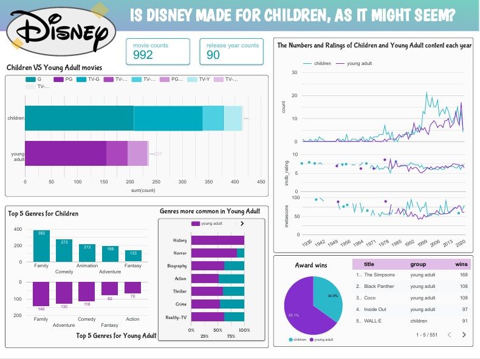

Disney: Is It Really For Kids?
เมื่อพูดถึงดิสนีย์ แล้วจะนึกถึง...?
สำหรับผมแล้ว เมื่อพูดถึงดิสนีย์ ผมจะนึกความทรงจำในวัยเด็ก ความสดใส ความเยาว์วัย และความฝันที่ได้โลดแล่นออกมาผ่านตัวละครที่มีลักษณะนิสัยโดดเด่นไม่เหมือนใคร
และภาพแอนิเมชันสีสันงดงามอลังการ การที่ผมเติบโตมากับการ์ตูนดิสนีย์หลาย ๆ เรื่อง ไม่ว่าจะเป็น Cars, Toy Story หรือชุดซีรีส์เจ้าหญิงดิสนีย์อย่าง Rapunzel หรือ Elza
ทำให้ภาพจำของคำว่าดิสนีย์ของผมล้วนเปี่ยมไปด้วยความเยาว์วัย

ด้วยเหตุนี้เองผมจึงรู้สึกประหลาดใจเมื่อไปเจอข้อมูลชุดหนึ่งบน Kaggle ที่รวบรวมสื่อของดิสนีย์ไว้มากมาย และได้พบว่าดิสนีย์เองก็มีเนื้อหาที่เด็กจำเป็นต้องได้รับคำแนะนำ (PG-13, PG-14) อยู่ไม่น้อยเช่นกัน
นั่นทำให้ผมเกิดคำถามขึ้นมาว่า "แท้จริงแล้วสื่อส่วนใหญ่ของดิสนีย์มีลักษณะเป็นอย่างไรนะ สื่อสำหรับเด็กจะมีมากอย่างที่ผมเคยคิดไว้หรือเปล่า" ผมจึงได้ทำการดาวน์โหลดชุดข้อมูลดังกล่าว และรีบหาคำตอบให้กับตัวเองทันที
การใช้ SQL และ Visualization เพื่อหาคำตอบที่ซ่อนอยู่
จากข้อสงสัยที่เกิดขึ้น นำไปสู่การตั้งคำถาม ผมจึงได้ใช้ SQL ในการสืบค้นข้อมูลในชุดข้อมูลและหาคำตอบของคำถามที่ว่า
"ดิสนีย์มีสื่อสำหรับเด็กมากน้อยแค่ไหน และสื่อแบบไหนระหว่างเด็กและวัยรุ่นที่ได้รับความนิยมมากกว่า" ทั้งในแง่ของคุณภาพและปริมาณ ไม่ว่าจะเป็นคะแนนเฉลี่ยจากเว็บไซต์รีวิวอย่าง Metascore และ IMDB การได้รับรางวัลสื่อ หรือจำนวนสื่อแต่ละประเภทที่ผลิตในแต่ละปี
ซึ่งผมได้พบข้อสังเกตที่น่าสนใจว่าแม้จำนวนสื่อสำหรับเด็กจะมีมากกว่าสื่อสำหรับวัยรุ่นกว่าเท่าตัว แต่รางวัลที่ได้รับกลับมีจำนวนน้อยกว่าสื่อวัยรุ่นเป็นอย่างมาก และแม้ว่าในส่วนของคะแนนเฉลี่ยจากเว็บไซต์รีวิวนั้นพบว่าแตกต่างกันไม่มากนัก
แต่สื่อสำหรับวัยรุ่นมีแนวโน้มที่จะมีการผลิตมากกว่าอย่างชัดเจน ซึ่งอาจเป็นผลมาจากการที่สื่อสำหรับวัยรุ่นนั้นสามารถเข้าถึงกลุ่มผู้ชมได้กว้างกว่า และมีผลงานที่ดีจากการได้รับรางวัลมากมายตามมา
ถึงอย่างนั้น หากพิจารณาสื่อรายเรื่องแล้วพบว่าสื่อสำหรับเด็กหลายเรื่องก็มีคะแนนเฉลี่ยในเว็บไซต์รีวิวที่สูงกว่า และสูงที่สุดในทั้งสองแพลตฟอร์มอีกด้วย
ผมจึงได้นำข้อสังเกตเหล่านี้มาสร้างเป็น infographic ที่สื่อสารข้อมูลที่ค้นพบออกมาในรูปแบบของกราฟแท่ง กราฟวงกลม กราฟเส้น โดยใช้โปรแกรม Tableau Public เพื่อให้สามารถสื่อสารข้อมูลที่ค้นพบออกมาได้อย่างชัดเจนมากยิ่งขึ้น
พร้อมทั้งยังมีตัวกรองที่ช่วยให้สามารถพิจารณาเลือกดูแนวโน้มของสื่อแต่ละประเภทในช่วงปีต่าง ๆ ได้สะดวกมากยิ่งขึ้น
Data Visualizations